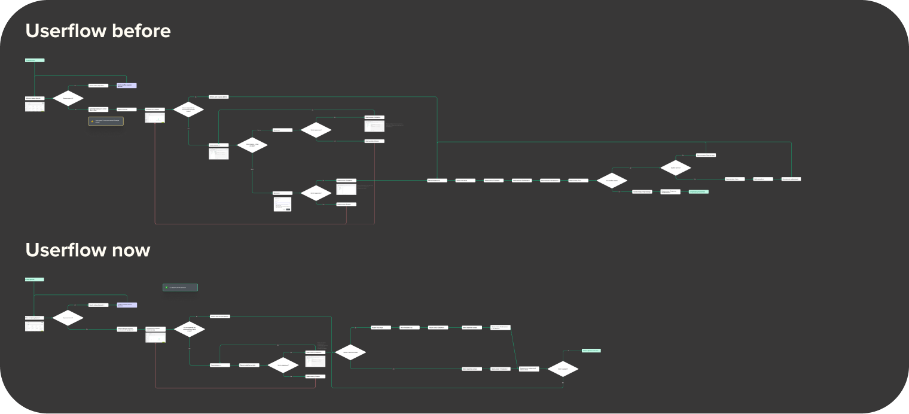
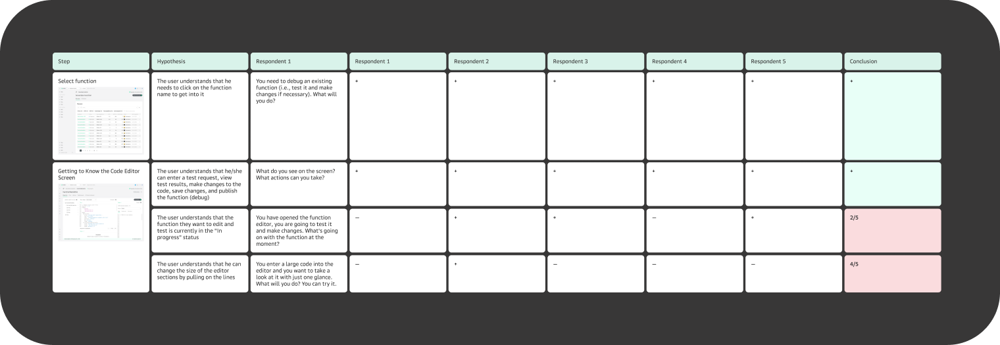

Serverless Functions
Improving developer experience in an event-driven cloud service

Overview
Serverless Functions is a customer-facing cloud service that allows developers to run code in response to events without managing servers.
The service is part of a broader cloud platform and is used to build event-driven and scalable applications.
The first version of the product was heavily based on competitor analysis.
Over time, the team identified opportunities to significantly improve the developer experience — while working strictly within an existing design system and predefined UI components.
Context & Challenge
Despite being functionally complete, the initial version had several UX issues:
- Core workflows (function creation, debugging, testing) were fragmented
- Developers had to navigate multiple screens to complete simple tasks
- Debugging and iteration cycles were slow and cognitively demanding
- The mental model of how functions work in the platform was unclear
These issues increased time-to-first-success and made the product harder to adopt.
Constraints
- No changes to the visual language or design system components
- Limited ability to introduce new UI patterns
- Need to stay compatible with existing backend logic
These constraints required focusing purely on workflow clarity and interaction design, rather than UI polish.
My Role
Product Designer
- UX audit of the existing solution
- Identifying usability and workflow issues
- Redesigning core user flows
- Planning and running usability testing
- Synthesizing insights and presenting results to stakeholders
Design approach
I started with a UX audit of the existing solution to identify friction points and unnecessary steps.
The main design goal was to reduce cognitive load and number of actions required to reach a successful outcome.
Key principles:
- Fewer screens, clearer progression
- Stronger alignment with developers’ mental models
- Faster feedback during debugging and testing
Key design decisions
Simplified core workflows
I restructured the main user flows to reduce the number of steps required to:
- create a function
- debug and test execution
Even visually, the updated user flows became significantly shorter and easier to follow.

Clearer debugging experience
Debugging is one of the most critical and stressful moments for developers.
The redesigned flow prioritizes:
- immediate visibility of execution results
- faster access to logs and errors
- fewer context switches between screens
This allowed developers to iterate faster and stay focused on problem-solving.
Progressive disclosure
Instead of exposing all configuration options at once, the interface reveals complexity progressively — only when it becomes relevant to the user.
This approach reduced noise for less experienced users while keeping advanced options accessible.
Usability testing

To validate the design decisions, I prepared a detailed usability testing guide.
Each interaction point was linked to a specific hypothesis, with corresponding tasks and questions.
I conducted usability sessions, analyzed the results, and compiled a structured report highlighting:
- confirmed hypotheses
- unexpected user behavior
- areas requiring further iteration
The findings were presented to the team and used to refine the solution.
Outcome
- Core workflows became shorter and more predictable
- Debugging and iteration cycles required fewer steps
- The overall experience aligned better with developers’ mental models